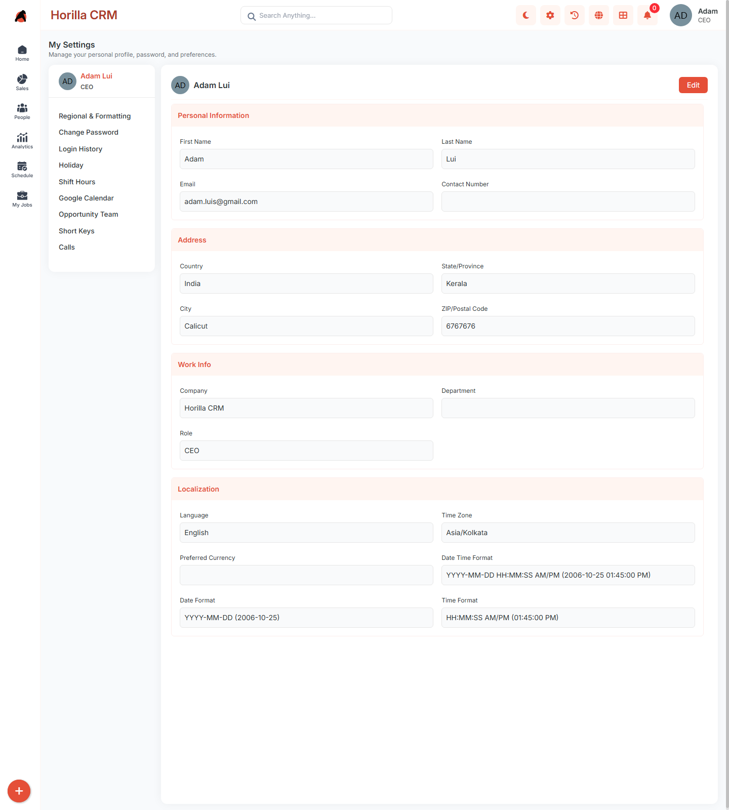
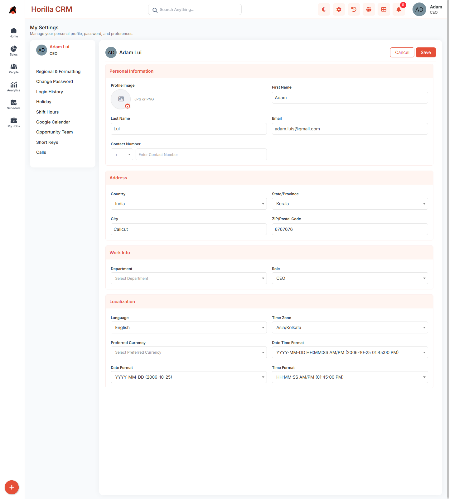

Introduction
The user profile gathers your personal details, address, place in the organisation and the regional preferences used to display the CRM. Open My Settings and select your name at the top of the sidebar. The page title is your name, and Edit sits at the top right.

Key Features and Functionalities
1.1 Personal Information
The read-only section shows First Name, Last Name, Email and Contact Number.
1.2 Address
The section shows Country, State/Province, City and ZIP/Postal Code.
1.3 Work Info
The section shows Company, Department and Role. Company is displayed here and is not a field on the edit form.
1.4 Localization
The section shows Language, Time Zone, Preferred Currency, Date Time Format, Date Format and Time Format. Each format choice includes an example, such as YYYY-MM-DD (2006-10-25) and HH:MM:SS AM/PM (01:45:00 PM).
1.5 Editing the Profile
Click Edit at the top right. The same page becomes a form, and the top right changes to Cancel and Save. Cancel returns to the read-only page. Save stores the changes.
Personal Information adds Profile Image, which accepts JPG or
PNG, beside First Name, Last Name, Email and Contact Number. Contact Number has a country-code
list and the placeholder Enter Contact Number
.
Address uses dropdowns for Country and State/Province, and text fields for City and ZIP/Postal Code. Work Info uses dropdowns for Department and Role. Localization uses dropdowns for Language, Time Zone, Preferred Currency, Date Time Format, Date Format and Time Format.
